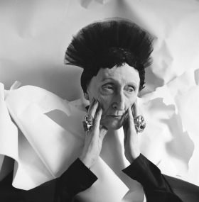

Friday, May the 16th, 2014
back to: title, date or indexes
In 1927 Sylvia Townsend Warner attended a party at Edith Sitwell's house. She did not enjoy it. “The room [was] full of young male poets and old female rastas”, she noted. I suppose rasta must have had a different meaning for Sylvia, and she was not surrounded by elderly female rastafarians, though I prefer to think this is what she did mean. The vision of Sylvia Townsend Warner, Edith Sitwell, and several aged dreadlocked rastafarian women calling on Jah to deliver them from their sufferation in Babylon is too splendid to be scuppered by foolish matters such as historical truth.
